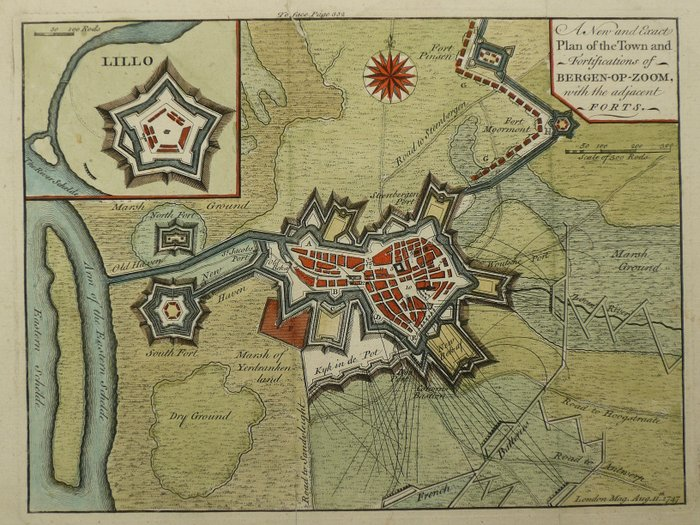

Jan Verwithagen / Joannes Withagius × Erasmus — فرضية الاسم واكتشاف شبكة الطباعة
غوص العقدة 7 أثبت شيئًا مهمًا وغير الذي كنا نبحث عنه: Verwithagen نفسه مرتبط مباشرة بعالم إيراسموس والطباعة الإنسانية في أنتويرب، لكن صلته النَسَبية بعائلة Withagen في بيرخن أوب زووم ما زالت غير مثبتة.
خريطة الدليل
A · Antwerp printer 1549+Erasmus
B · works in print/book networkWithagen family
D/E · genealogical continuity unproven
هوية Jan Verwithagen
مصادر تاريخ الطباعة تضع Jan I Verwithagen، المعروف باللاتينية Joannes Withagius، مولودًا نحو 1526 في Zoersel، ناشطًا في أنتويرب، مواطنًا فيها منذ 26 أبريل 1549، مع رخصة طباعة في 31 مايو 1549، وعضوية في بيئة نقابة القديس لوقا.
Erasmus · الرابط أصبح A/B
قواعد تجارة الكتب المبكرة تسجل مواد لإيراسموس ضمن مخزون/تداول مرتبط بإصدارات مطبعة Withagius، ومنها Precationes وCivilitas morum، بينما دراسات تاريخ الطباعة توثق عمله داخل شبكة أنتويرب التي تضم Plantin. هذا يثبت «Verwithagen ↔ Erasmus print culture»، لا «Withagen family ↔ Erasmus».
العلم والخرائط
Verwithagen طبع أيضًا Cosmographia لـPetrus Apianus/Gemma Frisius وإصدارات حسابية ولغوية. لذلك عقدته تتقاطع مع رحلات المعرفة، الخرائط، اللغة، العلم، والكاثوليكية المضادة للإصلاح.
فرضية النسب · تبقى D/E
حتى الآن لا توجد سلسلة وثائقية Zoersel/Antwerpen → Bergen op Zoom تربط Jan Verwithagen بفرع Withagen في القرنين 18–20. التشابه الاسمي يسمح بسؤال بحثي فقط.

حد منهجي
لا نساوي بين تشابه الاسم، المشاركة في وثيقة، والقرابة. كل واحدة طبقة دليل مستقلة.